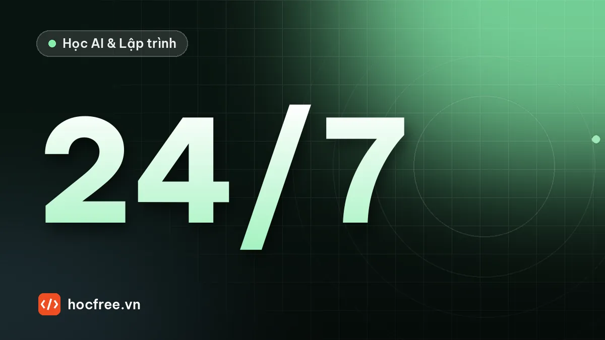

Dự án: đóng gói ứng dụng vision chạy 24/7, tự khởi động lại, cập nhật mô hình
Cấu hình TOML có kiểm tra, supervisor tự khởi động lại khi lỗi hay treo, cập nhật mô hình nguyên tử có rollback, chạy như dịch vụ Windows/Linux.

Học xong bài này, bạn sẽ
- Cấu hình bằng file, không sửa code
- Tự khởi động lại khi lỗi
- Cập nhật mô hình an toàn
Nên học trước: Docker cho kỹ sư AI
Nội dung bài viết
Đây là dự án tổng kết chặng Deployment. Bạn đã có mô hình ONNX được kiểm chứng (bài "Xuất ONNX và kiểm tra kết quả khớp PyTorch"), biết đo latency, ghi log JSON và giám sát drift (bài "Đo latency, logging và giám sát mô hình"), biết đóng gói môi trường bằng Docker. Còn thiếu một mảnh mà khách hàng nhà máy quan tâm nhất: trạm phải chạy 24/7 mà không cần bạn đứng cạnh. Máy tính khởi động lại lúc 3 giờ sáng sau khi mất điện, chương trình phải tự chạy. Một lỗi hiếm làm chương trình thoát, nó phải tự đứng dậy trong vài giây. Một deadlock làm chương trình đứng im mà không thoát, phải có ai đó phát hiện và khởi động lại. Kỹ thuật viên muốn đổi ngưỡng, không được sửa code. Kỹ sư AI gửi mô hình mới, phải kiểm định trước khi dùng và quay lại bản cũ trong một lệnh nếu có vấn đề. Dự án này xây đúng bộ khung đó, chạy được ngay trên máy bạn với các sự cố giả lập.
1. Đề bài
Trạm kiểm tra vết xước dùng một mô hình ONNX nhỏ (ảnh xám 64×64, đầu ra 2 logit OK/NG). Camera giả tạo ảnh mỗi 50 ms. Bạn viết hai chương trình:
- Worker (
tram_worker.py): vòng lặp kiểm tra: chụp, suy luận, ghi log, ghi heartbeat; tự nạp mô hình mới khi con trỏ mô hình thay đổi; dừng sạch khi nhận tín hiệu dừng. - Supervisor (
giam_sat.py): kiểm tra cấu hình, khởi động worker như một tiến trình con, theo dõi mã thoát và heartbeat, khởi động lại khi worker chết hoặc treo, giới hạn số lần khởi động lại, dừng worker sạch sẽ khi chính nó được yêu cầu dừng.
Kịch bản thử nghiệm (tự chạy, tự kết thúc): lần chạy 1 worker gặp lỗi và thoát ở chu kỳ 20; lần chạy 2 worker bị deadlock ở chu kỳ 15; lần chạy 3 chạy bình thường, giữa chừng mô hình v2 được kiểm định và đưa vào dùng mà không dừng trạm; cuối cùng supervisor được yêu cầu dừng và worker thoát sạch. Trước đó, ba mô hình "ứng viên" lỗi (file hỏng, bỏ sót lỗi, sai kích thước đầu vào) phải bị từ chối.
2. Yêu cầu
| Mã | Yêu cầu | Tiêu chí đạt |
|---|---|---|
| R1 | Mọi tham số (chu kỳ, ngưỡng, timeout, thư mục, tiêu chí nghiệm thu) nằm trong file TOML | Đổi ngưỡng NG hay timeout không cần sửa code |
| R2 | Kiểm tra cấu hình khi khởi động: khóa lạ, sai kiểu, ngoài khoảng, ràng buộc chéo | File sai bị từ chối với danh sách tất cả lỗi, trước khi chạy bất cứ thứ gì |
| R3 | Worker chạy trong tiến trình riêng; supervisor khởi động lại khi worker thoát bất thường | Lỗi ở chu kỳ 20 → worker mới chạy trong vài giây |
| R4 | Phát hiện treo bằng heartbeat, buộc dừng và khởi động lại | Deadlock → bị phát hiện sau ≤ timeout heartbeat + 1 s, worker mới chạy |
| R5 | Giới hạn khởi động lại (backoff, số lần tối đa trong một khoảng thời gian) | Lỗi lặp liên tục không tạo vòng khởi động lại vô hạn; có log CRITICAL |
| R6 | Kiểm định mô hình mới: mã băm, nạp được, đặc tả đầu vào, bộ ảnh vàng (độ chính xác, không bỏ sót NG), khớp với mô hình hiện tại, tốc độ | 3 ứng viên lỗi bị từ chối với lý do đúng; v2 đạt |
| R7 | Chuyển mô hình nguyên tử bằng con trỏ + os.replace; giữ bản trước; quay lại một lệnh | Worker đổi sang v2 không dừng trạm; quay_lai() đưa về v1 |
| R8 | Dừng sạch khi nhận SIGTERM/SIGINT (hoặc file STOP) | Worker ghi log dung_sach, mã thoát 0 |
| R9 | Cài làm dịch vụ tự chạy khi máy khởi động (systemd hoặc Windows service) | Có file unit/lệnh cài đặt, có Restart ở tầng dịch vụ |
3. Kiến thức sử dụng
- Xuất ONNX và kiểm tra kết quả khớp PyTorch:
torch.onnx.export(torch 2.14, exporter mặc định), thẻ mô hình JSON, SHA-256, bộ ảnh vàng. - Đo latency, logging và giám sát mô hình: log JSON Lines với
RotatingFileHandler, heartbeat ghi nguyên tử, p95 latency. - Docker cho kỹ sư AI: khi trạm chạy trong container, chính sách khởi động lại của Docker đóng vai trò tầng ngoài cùng.
- Chặng 9 (dự án trạm vision mô phỏng): vòng lặp có timeout ở mọi chỗ chờ, heartbeat cho PLC, dừng sạch.
- Python chuẩn:
tomllib(Python ≥ 3.11),dataclasses,subprocess,signal,os.replace,shutil.
pip install onnxruntime numpy opencv-python # cho worker và supervisor (máy trạm)
pip install torch onnx onnxscript # chỉ để tạo mô hình mẫu ở phần 2 (máy phát triển)
# Bài viết chạy với Python 3.13, onnxruntime 1.31.0, torch 2.14.14. Gợi ý thiết kế
systemd / Windows service (Restart=always) ← tầng 3: hệ điều hành
└── giam_sat.py (supervisor) ← tầng 2: theo dõi worker
│ khởi động: python tram_worker.py --config tram.toml
│ theo dõi: mã thoát (poll) + heartbeat.json (pid, seq)
│ dừng: file STOP + SIGTERM → chờ → kill
└── tram_worker.py (worker) ← tầng 1: vòng lặp kiểm tra
├─ đọc models/current.json → models/v1/model.onnx (+ model.json, SHA-256)
├─ ghi du_lieu/heartbeat.json (nguyên tử), du_lieu/tram.jsonl (log)
└─ mỗi 1 s: con trỏ đổi? → nạp mô hình mới (lỗi → giữ mô hình cũ)
staging/v2/ ──kiem_dinh()──► models/v2/ ──os.replace(current.json)──► worker tự nạp
(truoc_do: v1 → quay_lai() một lệnh)Cấu trúc thư mục trên máy trạm:
C:\tram\ hoặc /opt/tram/
├── tram.toml ← cấu hình (kỹ thuật viên sửa được)
├── cau_hinh.py ← đọc + kiểm tra cấu hình (phần 1)
├── kho_mo_hinh.py ← kiểm định, nâng cấp, quay lại (phần 3)
├── tram_worker.py ← vòng lặp kiểm tra (phần 4)
├── giam_sat.py ← supervisor, điểm khởi động của dịch vụ (phần 5)
├── golden/golden.npz ← bộ ảnh vàng + nhãn cho kiểm định
├── staging/ ← mô hình mới gửi tới, chưa kiểm định
├── models/
│ ├── v1/ model.onnx, model.json
│ ├── v2/ ...
│ ├── current.json ← con trỏ: {"hien_tai": "v2", "truoc_do": "v1"}
│ └── lich_su.jsonl ← mọi lần đổi mô hình (ai, khi nào, kết quả kiểm định)
└── du_lieu/ tram.jsonl, giam_sat.jsonl, heartbeat.json, worker_output.log- Vì sao worker là tiến trình riêng, không phải thread? Python không có cách an toàn để "giết" một thread đang treo; còn tiến trình con thì hệ điều hành dừng được chắc chắn (
kill). Lỗi nặng trong thư viện C (driver camera, runtime GPU) làm sập cả tiến trình; nếu supervisor nằm cùng tiến trình, nó chết theo. - Heartbeat phải chứng minh vòng lặp chính còn quay: ghi từ vòng lặp chính, kèm
pid(để supervisor không đọc nhầm heartbeat của lần chạy trước) vàseqtăng dần. Supervisor đo "bao lâu rồiseqkhông đổi" bằng đồng hồtime.monotonic()của chính nó, nên không bị ảnh hưởng khi đồng hồ hệ thống bị chỉnh. - Con trỏ thay vì ghi đè file mô hình: không bao giờ ghi đè
model.onnxđang dùng. Mỗi phiên bản là một thư mục bất biến; "phiên bản hiện tại" là nội dung một file JSON nhỏ, thay bằngos.replace(đổi tên nguyên tử trên cùng một ổ đĩa). Symlink cũng làm được trên Linux, nhưng trên Windows tạo symlink cần quyền đặc biệt, nên file con trỏ dễ dùng hơn ở cả hai nơi. - Hai tầng khởi động lại: supervisor lo worker; hệ điều hành (systemd/dịch vụ Windows) lo supervisor. Supervisor chủ động bỏ cuộc (thoát với mã lỗi) khi worker chết quá nhiều lần trong thời gian ngắn, để log CRITICAL và để tầng ngoài khởi động lại chậm hơn.
- Mọi chỗ chờ có timeout: chờ worker khởi động, chờ heartbeat, chờ worker dừng sạch. Hết timeout thì leo thang: yêu cầu dừng → SIGTERM → kill.
pid. (2) Dùng Popen.terminate() trên Windows để "dừng sạch": đó là TerminateProcess, giết ngay, không có cơ hội dọn dẹp. Cần kênh dừng riêng (file STOP, hoặc Ctrl+C/Ctrl+Break gửi tới nhóm tiến trình). (3) Ghi đè model.onnx trong lúc worker có thể đang đọc nó: worker nạp nửa file cũ nửa file mới. Không bao giờ sửa phiên bản đã cài; chỉ đổi con trỏ.5. Lời giải
Xem lời giải đầy đủ (8 phần, chạy lần lượt trong cùng một thư mục làm việc)
Phần 1: cấu hình TOML và kiểm tra hợp lệ. TOML dễ đọc với kỹ thuật viên hơn JSON (có chú thích, không cần ngoặc kép cho khóa), và Python ≥ 3.11 đọc được bằng tomllib có sẵn. Mỗi bảng ([tram], [mo_hinh]…) ứng với một dataclass; hàm kiểm tra gom tất cả lỗi rồi báo một lần, để kỹ thuật viên không phải sửa từng lỗi một.
# ===== cau_hinh.py =====
import tomllib
from dataclasses import MISSING, dataclass, fields
from pathlib import Path
@dataclass
class Tram:
ten: str
chu_ky_ms: int = 50
thu_muc_du_lieu: str = "du_lieu"
@dataclass
class MoHinh:
thu_muc: str = "models"
kich_thuoc: int = 64
nguong_ng: float = 0.5
kiem_tra_moi_s: float = 1.0
@dataclass
class GiamSat:
heartbeat_timeout_s: float = 3.0
khoi_dong_timeout_s: float = 30.0
tre_khoi_dong_lai_s: float = 1.0
max_khoi_dong_lai: int = 5
cua_so_khoi_dong_lai_s: float = 300.0
cho_dung_s: float = 5.0
@dataclass
class NghiemThu:
do_chinh_xac_min: float = 0.98
recall_ng_min: float = 1.0
khop_min: float = 0.97
p95_ms_max: float = 20.0
@dataclass
class CauHinh:
tram: Tram
mo_hinh: MoHinh
giam_sat: GiamSat
nghiem_thu: NghiemThu
GIOI_HAN = { # (bảng, khóa): (nhỏ nhất, lớn nhất)
("tram", "chu_ky_ms"): (5, 60_000), ("mo_hinh", "kich_thuoc"): (16, 2048),
("mo_hinh", "nguong_ng"): (0.0, 1.0), ("mo_hinh", "kiem_tra_moi_s"): (0.1, 3600),
("giam_sat", "heartbeat_timeout_s"): (0.5, 600), ("giam_sat", "max_khoi_dong_lai"): (1, 100),
("nghiem_thu", "do_chinh_xac_min"): (0.0, 1.0), ("nghiem_thu", "recall_ng_min"): (0.0, 1.0),
("nghiem_thu", "khop_min"): (0.0, 1.0),
}
class LoiCauHinh(Exception):
pass
def doc_cau_hinh(duong_dan):
try:
tho = tomllib.loads(Path(duong_dan).read_text(encoding="utf-8"))
except (OSError, tomllib.TOMLDecodeError) as e:
raise LoiCauHinh(f"Không đọc được {duong_dan}: {e}") from None
loi, cac_bang = [], {}
kieu_bang = {f.name: f.type for f in fields(CauHinh)}
for ten in tho.keys() - kieu_bang.keys():
loi.append(f"[{ten}]: bảng lạ")
for ten_bang, lop in kieu_bang.items():
du_lieu = tho.get(ten_bang, {})
cac_truong = {f.name: f for f in fields(lop)}
for k in du_lieu.keys() - cac_truong.keys():
loi.append(f"[{ten_bang}] {k}: khóa lạ (gõ sai?)")
hop_le = {}
for k, f in cac_truong.items():
if k not in du_lieu:
if f.default is MISSING and f.default_factory is MISSING: # không có mặc định -> bắt buộc
loi.append(f"[{ten_bang}] {k}: thiếu (bắt buộc)")
continue
v = du_lieu[k]
dung_kieu = isinstance(v, f.type) and not isinstance(v, bool)
if f.type is float and isinstance(v, int) and not isinstance(v, bool):
v, dung_kieu = float(v), True # cho phép viết 3 thay vì 3.0
if not dung_kieu:
loi.append(f"[{ten_bang}] {k} = {v!r}: cần kiểu {f.type.__name__}")
continue
if (ten_bang, k) in GIOI_HAN:
lo, hi = GIOI_HAN[(ten_bang, k)]
if not lo <= v <= hi:
loi.append(f"[{ten_bang}] {k} = {v}: ngoài khoảng [{lo}, {hi}]")
hop_le[k] = v
try:
cac_bang[ten_bang] = lop(**hop_le)
except TypeError:
pass # đã có lỗi "thiếu" ở trên
if not loi: # ràng buộc chéo giữa các bảng
cfg = CauHinh(**cac_bang)
if cfg.giam_sat.heartbeat_timeout_s < 5 * cfg.tram.chu_ky_ms / 1000:
loi.append("[giam_sat] heartbeat_timeout_s phải ≥ 5 lần chu kỳ, nếu không sẽ báo treo nhầm")
if loi:
raise LoiCauHinh("Cấu hình không hợp lệ:\n - " + "\n - ".join(loi))
return cfg
Path("tram.toml").write_text('''# Cấu hình trạm kiểm tra vết xước. Sửa file này, KHÔNG sửa code.
[tram]
ten = "TRAM-03"
chu_ky_ms = 50 # nhịp camera giả lập
thu_muc_du_lieu = "du_lieu"
[mo_hinh]
thu_muc = "models"
kich_thuoc = 64
nguong_ng = 0.5
kiem_tra_moi_s = 1.0 # bao lâu worker xem con trỏ mô hình một lần
[giam_sat]
heartbeat_timeout_s = 2.0
khoi_dong_timeout_s = 30.0
tre_khoi_dong_lai_s = 0.5 # chờ trước lần khởi động lại đầu, nhân đôi mỗi lần (tối đa 30 s)
max_khoi_dong_lai = 5 # quá 5 lần trong cửa sổ dưới đây thì supervisor bỏ cuộc
cua_so_khoi_dong_lai_s = 300
cho_dung_s = 5.0
[nghiem_thu]
do_chinh_xac_min = 0.98
recall_ng_min = 1.0 # không được bỏ sót bất kỳ ảnh NG nào trong bộ ảnh vàng
khop_min = 0.97 # khớp quyết định với mô hình đang chạy
p95_ms_max = 20.0
''', encoding="utf-8")
cfg = doc_cau_hinh("tram.toml")
print(cfg.tram)
print(cfg.giam_sat.heartbeat_timeout_s, cfg.nghiem_thu)
Path("tram_sai.toml").write_text('''[tram]
chu_ky_ms = "50"
[mo_hinh]
nguog_ng = 0.6
kiem_tra_moi_s = 0
[giam_sat]
max_khoi_dong_lai = 5.5
[camera]
ip = "192.168.1.10"
''', encoding="utf-8")
try:
doc_cau_hinh("tram_sai.toml")
except LoiCauHinh as e:
print(e)Tram(ten='TRAM-03', chu_ky_ms=50, thu_muc_du_lieu='du_lieu')
2.0 NghiemThu(do_chinh_xac_min=0.98, recall_ng_min=1.0, khop_min=0.97, p95_ms_max=20.0)
Cấu hình không hợp lệ:
- [camera]: bảng lạ
- [tram] ten: thiếu (bắt buộc)
- [tram] chu_ky_ms = '50': cần kiểu int
- [mo_hinh] nguog_ng: khóa lạ (gõ sai?)
- [mo_hinh] kiem_tra_moi_s = 0.0: ngoài khoảng [0.1, 3600]
- [giam_sat] max_khoi_dong_lai = 5.5: cần kiểu intSáu lỗi được báo cùng lúc, mỗi lỗi chỉ đúng bảng, khóa và lý do. Đặc biệt nguog_ng (gõ sai) bị bắt là "khóa lạ" thay vì bị lặng lẽ bỏ qua rồi dùng ngưỡng mặc định, loại lỗi cấu hình nguy hiểm nhất. Supervisor gọi doc_cau_hinh trước khi làm bất cứ việc gì; cấu hình sai thì thoát ngay với mã lỗi và thông báo rõ ràng.
Phần 2: mô hình mẫu, ứng viên lỗi và bộ ảnh vàng. Phần này đóng vai "kỹ sư AI gửi mô hình tới": huấn luyện nhanh hai phiên bản v1, v2 và tạo ba ứng viên lỗi, mỗi thư mục gồm model.onnx + thẻ model.json, đặt trong staging/. Trên máy trạm thật bạn không chạy phần này; bạn chỉ nhận thư mục ứng viên.
import copy
import hashlib
import json
import cv2
import numpy as np
import torch
import torch.nn as nn
torch.set_num_threads(4)
def sha256(duong_dan):
h = hashlib.sha256()
with open(duong_dan, "rb") as f:
for khoi in iter(lambda: f.read(1 << 20), b""):
h.update(khoi)
return h.hexdigest()
def anh_mau(ng, rng, n=64):
anh = np.full((n, n), rng.normal(170, 5), np.float32) + rng.normal(0, rng.uniform(4, 9), (n, n))
if ng:
x1, y1 = rng.integers(5, n // 2 - 2, 2)
x2, y2 = rng.integers(n // 2 + 2, n - 5, 2)
cv2.line(anh, (int(x1), int(y1)), (int(x2), int(y2)), 90, int(rng.integers(1, 3)))
return np.clip(anh, 0, 255).astype(np.uint8)
def tien_xu_ly(ds_anh):
return (np.asarray(ds_anh, np.float32)[:, None] / 255.0 - 0.6) / 0.2 # (N, 1, H, W)
def tao_mang():
return nn.Sequential(
nn.Conv2d(1, 8, 3, padding=1), nn.BatchNorm2d(8), nn.ReLU(), nn.MaxPool2d(2),
nn.Conv2d(8, 16, 3, padding=1), nn.BatchNorm2d(16), nn.ReLU(), nn.MaxPool2d(2),
nn.Conv2d(16, 16, 3, padding=1), nn.ReLU(), nn.AdaptiveMaxPool2d(1), nn.Flatten(), nn.Linear(16, 2))
def huan_luyen(seed, so_epoch):
torch.manual_seed(seed)
rng = np.random.default_rng(seed)
nhan = np.array([i % 2 for i in range(600)])
X = torch.from_numpy(tien_xu_ly([anh_mau(n, rng) for n in nhan]))
y = torch.from_numpy(nhan).long()
m = tao_mang()
opt = torch.optim.Adam(m.parameters(), lr=3e-3)
for _ in range(so_epoch):
perm = torch.randperm(600)
for i in range(0, 600, 32):
idx = perm[i:i + 32]
loss = nn.functional.cross_entropy(m(X[idx]), y[idx])
opt.zero_grad()
loss.backward()
opt.step()
return m.eval()
def xuat(m, thu_muc, phien_ban, n=64):
thu_muc = Path(thu_muc)
thu_muc.mkdir(parents=True, exist_ok=True)
torch.onnx.export(m.eval(), (torch.zeros(1, 1, n, n),), str(thu_muc / "model.onnx"),
input_names=["images"], output_names=["logits"], dynamic_shapes=({0: "batch"},),
opset_version=18, external_data=False, verbose=False)
the = {"phien_ban": phien_ban, "sha256": sha256(thu_muc / "model.onnx"),
"dau_vao": {"ten": "images", "shape": ["batch", 1, n, n]},
"tien_xu_ly": "xam/255, (x-0.6)/0.2", "lop": ["OK", "NG"]}
(thu_muc / "model.json").write_text(json.dumps(the, indent=2, ensure_ascii=False), encoding="utf-8")
v1, v2 = huan_luyen(3, 2), huan_luyen(2, 4)
xuat(v1, "staging/v1", "v1")
xuat(v2, "staging/v2", "v2")
nguon_v2 = Path("staging/v2") # v3: file bị hỏng khi chép (thêm 16 byte rác)
Path("staging/v3").mkdir(exist_ok=True)
(Path("staging/v3") / "model.onnx").write_bytes((nguon_v2 / "model.onnx").read_bytes() + b"\0" * 16)
the3 = json.loads((nguon_v2 / "model.json").read_text(encoding="utf-8"))
the3["phien_ban"] = "v3"
(Path("staging/v3") / "model.json").write_text(json.dumps(the3), encoding="utf-8")
v4 = copy.deepcopy(v2) # v4: "tối ưu" hỏng, luôn trả OK
with torch.no_grad():
v4[-1].bias[0] += 20.0
xuat(v4, "staging/v4", "v4")
xuat(tao_mang(), "staging/v5", "v5", n=48) # v5: đầu vào 48x48, không hợp với trạm
rng_vang = np.random.default_rng(99) # bộ ảnh vàng: 200 ảnh, 20% NG, nhãn đã duyệt
nhan_vang = (rng_vang.random(200) < 0.2).astype(np.int64)
Path("golden").mkdir(exist_ok=True)
np.savez_compressed("golden/golden.npz", anh=np.stack([anh_mau(n, rng_vang) for n in nhan_vang]),
nhan=nhan_vang)
print(sorted(p.name for p in Path("staging").iterdir()), "| ảnh vàng:", len(nhan_vang),
"NG:", int(nhan_vang.sum()))['v1', 'v2', 'v3', 'v4', 'v5'] | ảnh vàng: 200 NG: 26Phần 3: kiểm định, nâng cấp nguyên tử, quay lại. kiem_dinh() chạy lần lượt các bước, dừng ở bước đầu tiên không thể đi tiếp (file hỏng thì không nạp, không nạp thì không chạy ảnh vàng). nang_cap() chép ứng viên vào models/<phiên bản> qua một thư mục tạm, kiểm tra lại mã băm sau khi chép, rồi mới đổi con trỏ bằng os.replace. Mọi lần đổi được ghi vào lich_su.jsonl.
# ===== kho_mo_hinh.py =====
import os
import shutil
import time
from datetime import datetime
import onnxruntime as ort
def doc_con_tro(cfg):
p = Path(cfg.mo_hinh.thu_muc) / "current.json"
return json.loads(p.read_text(encoding="utf-8")) if p.exists() else None
def ghi_con_tro(cfg, noi_dung, ly_do):
thu_muc = Path(cfg.mo_hinh.thu_muc)
tam = thu_muc / "current.json.tmp"
with open(tam, "w", encoding="utf-8") as f:
json.dump(noi_dung, f)
f.flush()
os.fsync(f.fileno()) # dữ liệu xuống đĩa trước khi đổi tên
os.replace(tam, thu_muc / "current.json") # nguyên tử: worker thấy file cũ hoặc mới, không bao giờ dở dang
with open(thu_muc / "lich_su.jsonl", "a", encoding="utf-8") as f:
f.write(json.dumps({"luc": datetime.now().isoformat(timespec="seconds"), "ly_do": ly_do,
**noi_dung}, ensure_ascii=False) + "\n")
def mo_session(thu_muc_mh):
return ort.InferenceSession(str(Path(thu_muc_mh) / "model.onnx"), providers=["CPUExecutionProvider"])
def kiem_dinh(thu_muc_ung_vien, cfg):
"""Trả về (đạt?, [(bước, đạt?, chi tiết)])."""
bc, thu_muc = [], Path(thu_muc_ung_vien)
nt = cfg.nghiem_thu
def buoc(ten, dat, chi_tiet):
bc.append((ten, dat, chi_tiet))
return dat
try:
the = json.loads((thu_muc / "model.json").read_text(encoding="utf-8"))
except (OSError, json.JSONDecodeError) as e:
buoc("the_mo_hinh", False, str(e))
return False, bc
if not buoc("sha256", sha256(thu_muc / "model.onnx") == the["sha256"], the["sha256"][:12]):
return False, bc
try:
sess = mo_session(thu_muc)
except Exception as e:
buoc("nap", False, str(e)[:80])
return False, bc
vao = sess.get_inputs()[0]
n = cfg.mo_hinh.kich_thuoc
if not buoc("dau_vao", vao.name == "images" and vao.shape[1:] == [1, n, n], f"{vao.name} {vao.shape}"):
return False, bc
vang = np.load("golden/golden.npz")
x, nhan = tien_xu_ly(vang["anh"]), vang["nhan"]
du_doan = sess.run(None, {"images": x})[0].argmax(1)
acc = float((du_doan == nhan).mean())
recall = float((du_doan[nhan == 1] == 1).mean())
buoc("do_chinh_xac", acc >= nt.do_chinh_xac_min, f"{acc:.3f} (min {nt.do_chinh_xac_min})")
buoc("recall_ng", recall >= nt.recall_ng_min, f"{recall:.3f} (min {nt.recall_ng_min})")
con_tro = doc_con_tro(cfg)
if con_tro:
hien_tai = mo_session(Path(cfg.mo_hinh.thu_muc) / con_tro["hien_tai"])
khop = float((hien_tai.run(None, {"images": x})[0].argmax(1) == du_doan).mean())
buoc("khop_hien_tai", khop >= nt.khop_min, f"{khop:.3f} so với {con_tro['hien_tai']}")
t = []
for i in range(60): # 10 lần đầu là warm-up
t0 = time.perf_counter()
sess.run(None, {"images": x[i % len(x)][None]})
t.append((time.perf_counter() - t0) * 1000)
p95 = float(np.percentile(t[10:], 95))
buoc("toc_do", p95 <= nt.p95_ms_max, f"p95 {p95:.2f} ms")
return all(d for _, d, _ in bc), bc
def nang_cap(thu_muc_ung_vien, cfg):
dat, bc = kiem_dinh(thu_muc_ung_vien, cfg)
if not dat:
return False, bc
phien_ban = json.loads((Path(thu_muc_ung_vien) / "model.json").read_text(encoding="utf-8"))["phien_ban"]
kho = Path(cfg.mo_hinh.thu_muc)
kho.mkdir(exist_ok=True)
dich = kho / phien_ban
if dich.exists():
return False, bc + [("cai_dat", False, f"{phien_ban} đã tồn tại; phiên bản đã cài là bất biến")]
tam = kho / f".tam_{phien_ban}"
shutil.rmtree(tam, ignore_errors=True)
shutil.copytree(thu_muc_ung_vien, tam)
the = json.loads((tam / "model.json").read_text(encoding="utf-8"))
if sha256(tam / "model.onnx") != the["sha256"]: # kiểm lại sau khi chép
shutil.rmtree(tam)
return False, bc + [("cai_dat", False, "mã băm sai sau khi chép")]
os.replace(tam, dich)
cu = doc_con_tro(cfg)
ghi_con_tro(cfg, {"hien_tai": phien_ban, "truoc_do": cu["hien_tai"] if cu else None}, "nang_cap")
return True, bc
def quay_lai(cfg):
ct = doc_con_tro(cfg)
if not ct or not ct.get("truoc_do"):
raise RuntimeError("Không có phiên bản trước để quay lại")
thu_muc = Path(cfg.mo_hinh.thu_muc) / ct["truoc_do"]
the = json.loads((thu_muc / "model.json").read_text(encoding="utf-8"))
if sha256(thu_muc / "model.onnx") != the["sha256"]:
raise RuntimeError(f"{ct['truoc_do']} bị hỏng, không quay lại được")
ghi_con_tro(cfg, {"hien_tai": ct["truoc_do"], "truoc_do": ct["hien_tai"]}, "quay_lai")
return ct["truoc_do"]
def in_bao_cao(ten, dat, bc):
print(f"{ten}: {'ĐẠT' if dat else 'TỪ CHỐI'}")
for b, d, ct in bc:
print(f" {'✓' if d else '✗'} {b:14s} {ct}")
for v in ["v1", "v3", "v4", "v5"]:
dat, bc = nang_cap(Path("staging") / v, cfg)
in_bao_cao(v, dat, bc)
dat, bc = kiem_dinh("staging/v2", cfg) # chỉ kiểm định v2; việc đổi sẽ làm khi trạm đang chạy
in_bao_cao("v2 (chỉ kiểm định)", dat, bc)
print("con trỏ:", doc_con_tro(cfg))v1: ĐẠT
✓ sha256 13c605d15d7d
✓ dau_vao images ['batch', 1, 64, 64]
✓ do_chinh_xac 1.000 (min 0.98)
✓ recall_ng 1.000 (min 1.0)
✓ toc_do p95 2.54 ms
v3: TỪ CHỐI
✗ sha256 0e917e670281
v4: TỪ CHỐI
✓ sha256 e13ffe36a73c
✓ dau_vao images ['batch', 1, 64, 64]
✗ do_chinh_xac 0.870 (min 0.98)
✗ recall_ng 0.000 (min 1.0)
✗ khop_hien_tai 0.870 so với v1
✓ toc_do p95 0.25 ms
v5: TỪ CHỐI
✓ sha256 5156bdcc5fad
✗ dau_vao images ['batch', 1, 48, 48]
v2 (chỉ kiểm định): ĐẠT
✓ sha256 0e917e670281
✓ dau_vao images ['batch', 1, 64, 64]
✓ do_chinh_xac 1.000 (min 0.98)
✓ recall_ng 1.000 (min 1.0)
✓ khop_hien_tai 1.000 so với v1
✓ toc_do p95 0.25 ms
con trỏ: {'hien_tai': 'v1', 'truoc_do': None}Đọc báo cáo (mã băm và thời gian p95 trên máy bạn sẽ khác):
- v1 đạt mọi bước và được cài làm phiên bản đầu tiên: con trỏ trỏ tới v1, chưa có bản trước. Bước "khớp với mô hình hiện tại" chưa có vì trạm chưa có mô hình nào.
- v3 dừng ngay ở bước mã băm (file bị thêm 16 byte khi chép), chưa kịp nạp. Một file hỏng có thể vẫn nạp được và cho kết quả sai; kiểm tra mã băm trước là rẻ nhất và chắc nhất.
- v5 nạp được nhưng đầu vào 48×48 không khớp
kich_thuoc = 64của trạm. - v4 là trường hợp nguy hiểm nhất: file hợp lệ, nạp được, chạy nhanh, độ chính xác 87% nghe "không tệ", nhưng recall NG bằng 0: nó trả OK cho mọi sản phẩm, và 87% chính là tỷ lệ ảnh OK trong bộ ảnh vàng. Nếu tiêu chí chỉ là "độ chính xác ≥ 85%", v4 đã lọt qua và trạm sẽ cho mọi hàng lỗi đi qua. Vì thế tiêu chí nghiệm thu phải có recall NG (không bỏ sót lỗi trong bộ ảnh vàng) và độ khớp với mô hình đang chạy (v4 chỉ khớp 87% với v1).
- v2 đạt; ta chưa đổi con trỏ ngay mà để làm việc đó khi trạm đang chạy ở phần 6.
Phần 4: worker. Worker phải là một file riêng vì supervisor chạy nó như một tiến trình con. Để toàn bộ dự án chạy được từ đầu tới cuối trong một lần, đoạn code dưới ghi nội dung file ra đĩa; khi làm dự án thật, bạn tạo file tram_worker.py với phần nằm giữa hai dấu '''. Worker cố tình chỉ phụ thuộc thư viện chuẩn, NumPy và ONNX Runtime (không cần torch trên máy trạm), và tự đọc lại tram.toml (supervisor đã kiểm tra hợp lệ trước khi khởi động nó).
MA_WORKER = r'''# ===== tram_worker.py: vòng lặp kiểm tra, chạy dưới sự giám sát của giam_sat.py =====
import argparse
import hashlib
import json
import logging
import os
import signal
import sys
import threading
import time
import tomllib
from datetime import datetime
from logging.handlers import RotatingFileHandler
from pathlib import Path
import numpy as np
import onnxruntime as ort
DUNG = False
def yeu_cau_dung(signum, frame): # SIGTERM (systemd, supervisor) hoặc SIGINT (Ctrl+C, NSSM)
global DUNG
DUNG = True
class JsonFormatter(logging.Formatter):
def format(self, r):
doc = {"ts": datetime.fromtimestamp(r.created).isoformat(timespec="milliseconds"),
"muc": r.levelname, "pid": r.process, "tin": r.getMessage()}
doc.update(getattr(r, "du_lieu", {}))
if r.exc_info:
doc["loi"] = self.formatException(r.exc_info)
return json.dumps(doc, ensure_ascii=False)
def sha256(p):
h = hashlib.sha256()
with open(p, "rb") as f:
for khoi in iter(lambda: f.read(1 << 20), b""):
h.update(khoi)
return h.hexdigest()
def nap_mo_hinh(models):
"""Con trỏ current.json -> (phiên bản, session). Mã băm sai -> RuntimeError."""
ten = json.loads((models / "current.json").read_text(encoding="utf-8"))["hien_tai"]
the = json.loads((models / ten / "model.json").read_text(encoding="utf-8"))
if sha256(models / ten / "model.onnx") != the["sha256"]:
raise RuntimeError(f"SHA-256 của {ten}/model.onnx không khớp thẻ mô hình")
return ten, ort.InferenceSession(str(models / ten / "model.onnx"), providers=["CPUExecutionProvider"])
def ghi_heartbeat(duong_dan, du_lieu):
tam = duong_dan.with_suffix(".tmp")
try:
tam.write_text(json.dumps(du_lieu), encoding="utf-8")
os.replace(tam, duong_dan)
except OSError: # Windows: bên đọc đang mở file đích; lần sau ghi tiếp
pass
def anh_camera(i, n):
"""Camera giả: ảnh xám n x n; mỗi ảnh thứ 7 có vết xước."""
rng = np.random.default_rng(i)
anh = np.full((n, n), rng.normal(170, 5), np.float32) + rng.normal(0, 6, (n, n))
if i % 7 == 0:
anh[n // 3:n // 3 + 2, 8:n - 8] = 90
return np.clip(anh, 0, 255).astype(np.uint8)
def ke_hoach_loi():
"""Chỉ dùng khi thử nghiệm. TRAM_THU_LOI="1:crash@20,2:hang@15" (lần chạy:loại@chu kỳ)."""
kh = {}
for muc in filter(None, os.environ.get("TRAM_THU_LOI", "").split(",")):
lan, sau = muc.split(":")
loai, ck = sau.split("@")
kh[(int(lan), int(ck))] = loai
return kh
def main():
ap = argparse.ArgumentParser()
ap.add_argument("--config", required=True)
cfg = tomllib.loads(Path(ap.parse_args().config).read_text(encoding="utf-8"))
du_lieu, models = Path(cfg["tram"]["thu_muc_du_lieu"]), Path(cfg["mo_hinh"]["thu_muc"])
du_lieu.mkdir(exist_ok=True)
log = logging.getLogger("worker")
fh = RotatingFileHandler(du_lieu / "tram.jsonl", maxBytes=10_000_000, backupCount=10, encoding="utf-8")
fh.setFormatter(JsonFormatter())
log.addHandler(fh)
log.setLevel(logging.INFO)
signal.signal(signal.SIGTERM, yeu_cau_dung)
signal.signal(signal.SIGINT, yeu_cau_dung)
lan_chay, loi = int(os.environ.get("TRAM_LAN_CHAY", "1")), ke_hoach_loi()
n, nguong = cfg["mo_hinh"]["kich_thuoc"], cfg["mo_hinh"]["nguong_ng"]
chu_ky_s = cfg["tram"]["chu_ky_ms"] / 1000
file_hb, file_dung = du_lieu / "heartbeat.json", du_lieu / "STOP"
phien_ban, sess = nap_mo_hinh(models)
con_tro = (models / "current.json").read_bytes()
x0 = ((anh_camera(0, n).astype(np.float32) / 255 - 0.6) / 0.2)[None, None]
for _ in range(5): # warm-up trước khi báo sẵn sàng bằng heartbeat đầu tiên
sess.run(None, {"images": x0})
log.info("khoi_dong", extra={"du_lieu": {"lan_chay": lan_chay, "mo_hinh": phien_ban}})
i = so_ng = seq = 0
t_mo_hinh = t_hb = 0.0
try:
while not DUNG and not file_dung.exists():
t0 = time.monotonic()
i += 1
loai = loi.get((lan_chay, i))
if loai == "crash":
raise RuntimeError(f"lỗi giả lập ở chu kỳ {i}")
if loai == "hang":
log.warning("gia_lap_treo", extra={"du_lieu": {"chu_ky": i}})
khoa = threading.Lock()
khoa.acquire()
khoa.acquire() # deadlock: chờ một khóa mà chính mình đang giữ
x = ((anh_camera(i, n).astype(np.float32) / 255 - 0.6) / 0.2)[None, None]
z = sess.run(None, {"images": x})[0][0]
e = np.exp(z - z.max())
so_ng += bool(e[1] / e.sum() > nguong)
if t0 - t_mo_hinh >= cfg["mo_hinh"]["kiem_tra_moi_s"]:
t_mo_hinh = t0
moi = (models / "current.json").read_bytes()
if moi != con_tro:
con_tro = moi
try:
phien_ban, sess = nap_mo_hinh(models)
log.info("nap_mo_hinh", extra={"du_lieu": {"mo_hinh": phien_ban, "chu_ky": i}})
except Exception:
log.exception("nap_mo_hinh_loi") # giữ mô hình cũ, trạm chạy tiếp
if t0 - t_hb >= 0.25: # heartbeat 4 lần/giây, ghi từ vòng lặp chính
t_hb, seq = t0, seq + 1
ghi_heartbeat(file_hb, {"pid": os.getpid(), "seq": seq, "chu_ky": i, "mo_hinh": phien_ban})
time.sleep(max(0.0, chu_ky_s - (time.monotonic() - t0)))
except Exception:
log.exception("loi_nghiem_trong", extra={"du_lieu": {"chu_ky": i}})
raise
log.info("dung_sach", extra={"du_lieu": {"chu_ky": i, "so_ng": so_ng, "mo_hinh": phien_ban}})
return 0
if __name__ == "__main__":
sys.exit(main())
'''
Path("tram_worker.py").write_text(MA_WORKER, encoding="utf-8")
print("Đã ghi tram_worker.py,", len(MA_WORKER.splitlines()), "dòng")Đã ghi tram_worker.py, 150 dòngMấy chi tiết đáng chú ý: tín hiệu dừng chỉ bật cờ DUNG, vòng lặp tự kết thúc ở cuối chu kỳ hiện tại, nên không bao giờ dừng giữa lúc đang ghi kết quả cho PLC; file STOP là kênh dừng thứ hai chạy được trên mọi hệ điều hành; nạp mô hình mới thất bại thì giữ mô hình cũ và ghi log, không làm dừng trạm; mọi exception chưa bắt được ghi vào log JSON trước khi tiến trình thoát với mã khác 0, để supervisor biết đó là lỗi.
Phần 5: supervisor. Một vòng lặp đơn giản, mỗi 0,1 s: worker còn sống không (poll())? Đã có heartbeat của đúng tiến trình này chưa? seq có tăng không? Mọi lần khởi động lại đều đi qua _cho_khoi_dong_lai(), nơi áp dụng backoff và giới hạn số lần.
# ===== giam_sat.py (khi tách file: from cau_hinh import doc_cau_hinh, LoiCauHinh) =====
import signal
import subprocess
import sys
class Supervisor:
def __init__(self, file_cfg, cfg, moi_truong_them=None):
self.file_cfg, self.cfg, self.gs = file_cfg, cfg, cfg.giam_sat
self.du_lieu = Path(cfg.tram.thu_muc_du_lieu)
self.du_lieu.mkdir(exist_ok=True)
self.moi_truong_them = moi_truong_them or {}
self.proc, self.lan_chay, self.lan_khoi_dong_lai = None, 0, []
self.tre = self.gs.tre_khoi_dong_lai_s
self.dung_yeu_cau = self.bo_cuoc = False
self.t0 = time.monotonic()
def bao(self, tin, muc="INFO"):
print(f"[{time.monotonic() - self.t0:5.1f}s] {muc:8s} {tin}")
with open(self.du_lieu / "giam_sat.jsonl", "a", encoding="utf-8") as f:
f.write(json.dumps({"ts": datetime.now().isoformat(timespec="milliseconds"), "muc": muc,
"tin": tin}, ensure_ascii=False) + "\n")
def khoi_dong(self):
self.lan_chay += 1
(self.du_lieu / "STOP").unlink(missing_ok=True)
env = dict(os.environ, TRAM_LAN_CHAY=str(self.lan_chay), **self.moi_truong_them)
out = open(self.du_lieu / "worker_output.log", "ab") # traceback/stderr không bị mất
self.proc = subprocess.Popen([sys.executable, "tram_worker.py", "--config", str(self.file_cfg)],
env=env, stdout=out, stderr=subprocess.STDOUT)
out.close() # tiến trình con đã giữ bản sao
self.t_bat_dau, self.seq, self.t_seq = time.monotonic(), None, None
self.bao(f"khởi động worker lần {self.lan_chay}, pid {self.proc.pid}")
def doc_heartbeat(self):
try:
hb = json.loads((self.du_lieu / "heartbeat.json").read_text(encoding="utf-8"))
except (OSError, json.JSONDecodeError):
return None
if hb.get("pid") != self.proc.pid: # heartbeat cũ của lần chạy trước
return None
if hb["seq"] != self.seq:
self.seq, self.t_seq = hb["seq"], time.monotonic()
return hb
def dung_worker(self, sach=True):
"""sach=True: STOP + SIGTERM, chờ cho_dung_s. Hết hạn hoặc sach=False: terminate rồi kill."""
if self.proc is None or self.proc.poll() is not None:
return
cho = self.gs.cho_dung_s if sach else 1.0
if sach:
(self.du_lieu / "STOP").touch()
if os.name != "nt":
self.proc.send_signal(signal.SIGTERM) # Windows: terminate() là giết ngay
try:
self.proc.wait(cho)
except subprocess.TimeoutExpired:
self.bao(f"worker không dừng sau {cho} s, kill", "ERROR")
self.proc.kill()
self.proc.wait()
def cho_khoi_dong_lai(self):
bay_gio = time.monotonic()
self.lan_khoi_dong_lai = [t for t in self.lan_khoi_dong_lai
if bay_gio - t < self.gs.cua_so_khoi_dong_lai_s] + [bay_gio]
if len(self.lan_khoi_dong_lai) > self.gs.max_khoi_dong_lai:
self.bao(f"{len(self.lan_khoi_dong_lai)} lần khởi động lại trong "
f"{self.gs.cua_so_khoi_dong_lai_s:.0f} s, bỏ cuộc", "CRITICAL")
self.bo_cuoc = True
return
self.bao(f"chờ {self.tre:.1f} s rồi khởi động lại", "WARNING")
han = time.monotonic() + self.tre
while time.monotonic() < han and not self.dung_yeu_cau:
time.sleep(0.05)
self.tre = min(self.tre * 2, 30.0) # backoff: 0,5 → 1 → 2 → ... → 30 s
if not self.dung_yeu_cau:
self.khoi_dong()
def buoc(self):
ma = self.proc.poll()
if ma is not None:
self.bao(f"worker thoát, mã {ma}", "INFO" if ma == 0 else "ERROR")
self.cho_khoi_dong_lai()
return
hb = self.doc_heartbeat()
bay_gio = time.monotonic()
if self.t_seq is None:
if bay_gio - self.t_bat_dau > self.gs.khoi_dong_timeout_s:
self.bao("worker không gửi heartbeat sau khi khởi động", "ERROR")
self.dung_worker(sach=False)
self.cho_khoi_dong_lai()
elif bay_gio - self.t_seq > self.gs.heartbeat_timeout_s:
self.bao(f"heartbeat đứng {bay_gio - self.t_seq:.1f} s (chu kỳ {self.chu_ky_cuoi}): worker treo",
"ERROR")
self.dung_worker(sach=False)
self.cho_khoi_dong_lai()
elif bay_gio - self.t_bat_dau > 60:
self.tre = self.gs.tre_khoi_dong_lai_s # chạy ổn 60 s: reset backoff
if hb:
self.chu_ky_cuoi = hb["chu_ky"]
def chay(self, moc=None, toi_da_s=None):
self.chu_ky_cuoi = 0
self.khoi_dong()
try:
while not self.dung_yeu_cau and not self.bo_cuoc:
self.buoc()
if moc:
moc(self)
if toi_da_s and time.monotonic() - self.t0 > toi_da_s:
self.bao("hết thời gian chạy thử", "WARNING")
break
time.sleep(0.1)
finally:
self.bao("dừng worker")
self.dung_worker(sach=True)
self.bao(f"worker đã dừng, mã {self.proc.returncode}")
return 1 if self.bo_cuoc else 0
def main():
import argparse
ap = argparse.ArgumentParser()
ap.add_argument("--config", required=True)
file_cfg = ap.parse_args().config
try:
cfg = doc_cau_hinh(file_cfg)
except LoiCauHinh as e:
print(e, file=sys.stderr)
return 2
sv = Supervisor(file_cfg, cfg)
def khi_nhan_tin_hieu(signum, frame):
sv.dung_yeu_cau = True
signal.signal(signal.SIGTERM, khi_nhan_tin_hieu)
signal.signal(signal.SIGINT, khi_nhan_tin_hieu)
return sv.chay()
if __name__ == "__main__" and "--config" in sys.argv: # chỉ chạy main khi gọi như một script
sys.exit(main())Khi tách thành file giam_sat.py, dịch vụ hệ điều hành gọi python giam_sat.py --config tram.toml. Mã thoát có ý nghĩa: 0 là dừng theo yêu cầu, 1 là bỏ cuộc vì worker chết quá nhiều, 2 là cấu hình sai. Tầng dịch vụ dùng mã này để quyết định khởi động lại (phần 8).
Phần 6: chạy thử với sự cố giả lập. Cài v1 đã xong ở phần 3. Biến môi trường TRAM_THU_LOI ra lệnh cho worker gặp lỗi ở chu kỳ 20 của lần chạy 1 và deadlock ở chu kỳ 15 của lần chạy 2. Một "móc" (hook) gọi mỗi vòng supervisor đóng vai kỹ sư: khi lần chạy 3 đã ổn định 1,5 s, nâng cấp lên v2; 2,5 s sau, yêu cầu dừng như khi systemd gửi SIGTERM.
for f in ["heartbeat.json", "tram.jsonl", "giam_sat.jsonl", "worker_output.log"]:
(Path(cfg.tram.thu_muc_du_lieu) / f).unlink(missing_ok=True)
kich_ban = {"t_nang_cap": None}
def ky_su(sv):
bay_gio = time.monotonic()
if sv.lan_chay == 3 and kich_ban["t_nang_cap"] is None and sv.t_seq and bay_gio - sv.t_bat_dau > 1.5:
dat, _ = nang_cap(Path("staging/v2"), cfg)
sv.bao(f"kỹ sư: nâng cấp lên v2 -> {'đã đổi con trỏ' if dat else 'bị từ chối'}")
kich_ban["t_nang_cap"] = bay_gio
if kich_ban["t_nang_cap"] and bay_gio - kich_ban["t_nang_cap"] > 2.5:
sv.bao("yêu cầu dừng (như SIGTERM từ systemd)")
sv.dung_yeu_cau = True
sv = Supervisor("tram.toml", cfg, moi_truong_them={"TRAM_THU_LOI": "1:crash@20,2:hang@15"})
ma_thoat = sv.chay(moc=ky_su, toi_da_s=40)
print("supervisor kết thúc, mã", ma_thoat)[ 0.0s] INFO khởi động worker lần 1, pid 15614
[ 1.4s] ERROR worker thoát, mã 1
[ 1.4s] WARNING chờ 0.5 s rồi khởi động lại
[ 1.9s] INFO khởi động worker lần 2, pid 15627
[ 4.8s] ERROR heartbeat đứng 2.0 s (chu kỳ 11): worker treo
[ 5.8s] ERROR worker không dừng sau 1.0 s, kill
[ 5.8s] WARNING chờ 1.0 s rồi khởi động lại
[ 6.8s] INFO khởi động worker lần 3, pid 15643
[ 8.6s] INFO kỹ sư: nâng cấp lên v2 -> đã đổi con trỏ
[ 10.9s] INFO yêu cầu dừng (như SIGTERM từ systemd)
[ 11.0s] INFO dừng worker
[ 11.1s] INFO worker đã dừng, mã 0
supervisor kết thúc, mã 0Thời gian và pid khác nhau mỗi lần chạy, trình tự sự kiện thì không. Đọc theo dòng thời gian:
- Lần 1: worker mất khoảng 0,4 s để nạp thư viện, mô hình và warm-up, chạy 20 chu kỳ × 50 ms rồi gặp lỗi. Mã thoát 1 → supervisor chờ 0,5 s rồi khởi động lần 2.
- Lần 2: deadlock ở chu kỳ 15. Heartbeat cuối cùng supervisor thấy là của chu kỳ 11 (heartbeat ghi 4 lần mỗi giây, tức khoảng mỗi 5 chu kỳ). Sau 2,0 s không thấy
seqđổi, supervisor kết luận treo và gửi SIGTERM. Hàm xử lý tín hiệu của worker vẫn chạy và bật cờDUNG, nhưng vòng lặp đang kẹt trongacquire()nên không bao giờ quay lại kiểm tra cờ: sau 1 s, supervisor phải kill. Đây chính là lý do cần leo thang: tín hiệu "lịch sự" không cứu được tiến trình treo, và một thread giám sát nằm trong tiến trình đó cũng không cứu được. - Backoff tăng từ 0,5 s lên 1,0 s. Từ lúc treo tới lúc worker mới chạy mất khoảng 4–5 s: phần lớn là timeout heartbeat. Trên trạm thật, đặt
heartbeat_timeout_stheo chu kỳ thật và thời gian xử lý dài nhất còn hợp lệ (thường 3–10 s), và báo cho PLC qua tín hiệu lỗi để không có sản phẩm nào đi qua mà không được kiểm tra trong khoảng đó. - Lần 3: chạy bình thường. Kỹ sư gọi
nang_cap("staging/v2"): kiểm định lại từ đầu, chép vàomodels/v2, đổi con trỏ. Worker phát hiện con trỏ đổi trong vòng 1 s và nạp v2 giữa hai chu kỳ, không dừng trạm. - Dừng: supervisor tạo file STOP và gửi SIGTERM; worker hoàn thành chu kỳ đang chạy, ghi
dung_sachvà thoát với mã 0 trong khoảng 0,1 s; supervisor thoát với mã 0.
Phần 7: đọc log của worker và quay lại phiên bản cũ.
ban_ghi = [json.loads(d) for d in
(Path(cfg.tram.thu_muc_du_lieu) / "tram.jsonl").read_text(encoding="utf-8").splitlines()]
pid_lan = {}
for b in ban_ghi:
pid_lan.setdefault(b["pid"], len(pid_lan) + 1)
them = {k: b[k] for k in ("lan_chay", "chu_ky", "mo_hinh") if k in b}
loi = b["loi"].strip().splitlines()[-1] if "loi" in b else ""
print(f"lần {pid_lan[b['pid']]} {b['muc']:8s} {b['tin']:17s} {them} {loi}")
print("worker_output.log:", (Path(cfg.tram.thu_muc_du_lieu) / "worker_output.log")
.read_text(encoding="utf-8").strip().splitlines()[-1])
print("quay lại:", quay_lai(cfg), "| con trỏ:", doc_con_tro(cfg))
for d in (Path(cfg.mo_hinh.thu_muc) / "lich_su.jsonl").read_text(encoding="utf-8").splitlines():
b = json.loads(d)
print(" lịch sử:", b["ly_do"], b["hien_tai"], "(trước đó:", str(b["truoc_do"]) + ")")lần 1 INFO khoi_dong {'lan_chay': 1, 'mo_hinh': 'v1'}
lần 1 ERROR loi_nghiem_trong {'chu_ky': 20} RuntimeError: lỗi giả lập ở chu kỳ 20
lần 2 INFO khoi_dong {'lan_chay': 2, 'mo_hinh': 'v1'}
lần 2 WARNING gia_lap_treo {'chu_ky': 15}
lần 3 INFO khoi_dong {'lan_chay': 3, 'mo_hinh': 'v1'}
lần 3 INFO nap_mo_hinh {'chu_ky': 41, 'mo_hinh': 'v2'}
lần 3 INFO dung_sach {'chu_ky': 79, 'mo_hinh': 'v2'}
worker_output.log: RuntimeError: lỗi giả lập ở chu kỳ 20
quay lại: v1 | con trỏ: {'hien_tai': 'v1', 'truoc_do': 'v2'}
lịch sử: nang_cap v1 (trước đó: None)
lịch sử: nang_cap v2 (trước đó: v1)
lịch sử: quay_lai v1 (trước đó: v2)Số chu kỳ trong các dòng của lần 3 phụ thuộc thời gian nên thay đổi mỗi lần chạy. Log của worker kể lại đúng câu chuyện ở phần 6, mỗi lần chạy phân biệt bằng pid. Lần 1 có dòng loi_nghiem_trong kèm traceback (trường loi); dòng cuối của worker_output.log là cùng lỗi đó do Python in ra stderr. Nếu supervisor không chuyển stderr vào file, khi chạy dưới dịch vụ Windows traceback này biến mất. Lần 2 không có dòng kết thúc nào: tiến trình bị kill không kịp ghi gì, vì vậy supervisor phải tự ghi lý do vào giam_sat.jsonl. Lần 3 có nap_mo_hinh v2 và dung_sach. Cuối cùng quay_lai() kiểm tra mã băm của v1 rồi đổi con trỏ về v1 (nếu worker đang chạy, nó tự nạp lại v1 trong vòng 1 s); lich_su.jsonl giữ dấu mọi lần đổi để trả lời câu hỏi "trạm đã dùng mô hình nào, từ lúc nào".
Phần 8: cài làm dịch vụ tự chạy khi máy khởi động. Supervisor lo worker; còn ai lo supervisor? Hệ điều hành. Trên Linux (máy trạm Linux, PC công nghiệp chạy Ubuntu, Jetson), tạo file unit systemd /etc/systemd/system/tram-vision.service:
[Unit]
Description=Tram vision TRAM-03 (supervisor + worker)
After=network-online.target
Wants=network-online.target
StartLimitIntervalSec=600
StartLimitBurst=10
[Service]
Type=simple
User=vision
WorkingDirectory=/opt/tram
ExecStart=/opt/tram/venv/bin/python giam_sat.py --config /opt/tram/tram.toml
Restart=always
RestartSec=10
TimeoutStopSec=20
Environment=PYTHONUNBUFFERED=1
[Install]
WantedBy=multi-user.targetsudo systemctl daemon-reload
sudo systemctl enable --now tram-vision # bật tự chạy khi khởi động + chạy ngay
systemctl status tram-vision # trạng thái, PID, vài dòng log cuối
journalctl -u tram-vision -f # xem stdout của supervisor theo thời gian thực
sudo systemctl restart tram-vision # sau khi sửa tram.tomlRestart=always: systemd khởi động lại supervisor dù nó thoát với mã nào (kể cả 0);RestartSec=10chờ 10 s giữa các lần.StartLimitIntervalSec/StartLimitBurst(đặt trong[Unit]ở các bản systemd hiện nay) giới hạn số lần khởi động trong một khoảng thời gian; vượt quá thì systemd ngừng thử và đánh dấu dịch vụ lỗi.- Khi dừng (
systemctl stop, tắt máy), systemd gửi SIGTERM tới mọi tiến trình của dịch vụ (mặc địnhKillMode=control-group): supervisor và worker cùng nhận, cả hai đều xử lý được. SauTimeoutStopSecmà chưa thoát, systemd gửi SIGKILL. ĐặtTimeoutStopSeclớn hơncho_dung_scủa supervisor. - Chạy dưới user riêng (
vision), không chạy bằng root. Nhớ cấp quyền truy cập camera, cổng mạng, thư mục/opt/tramcho user này.
Trên Windows, python.exe không biết "nói chuyện" với Service Control Manager, nên sc create ... binPath= "python.exe giam_sat.py" sẽ khởi động thất bại sau khoảng 30 giây (lỗi 1053). Cách phổ biến là dùng NSSM (Non-Sucking Service Manager), một chương trình nhỏ đứng giữa, bọc mọi ứng dụng console thành dịch vụ:
nssm install TramVision "C:\tram\venv\Scripts\python.exe" "giam_sat.py --config C:\tram\tram.toml"
nssm set TramVision AppDirectory C:\tram
nssm set TramVision Start SERVICE_AUTO_START
nssm set TramVision AppExit Default Restart
nssm set TramVision AppRestartDelay 10000
nssm set TramVision AppStdout C:\tram\du_lieu\service.log
nssm set TramVision AppStderr C:\tram\du_lieu\service.log
nssm start TramVision
sc failure TramVision reset= 86400 actions= restart/10000/restart/10000/restart/60000
sc query TramVision- Khi dừng dịch vụ, NSSM mặc định thử gửi Ctrl+C tới ứng dụng console trước, rồi mới tới các cách mạnh hơn và cuối cùng là kết thúc tiến trình. Ctrl+C tới Python thành SIGINT, nên supervisor của bạn xử lý SIGINT giống SIGTERM. Supervisor dừng worker bằng file STOP (vì trên Windows không gửi được SIGTERM).
sc failuređặt hành động khi dịch vụ chết: khởi động lại sau 10 s, 10 s, rồi 60 s; bộ đếm lỗi reset sau 86400 s (1 ngày). Lưu ý cú pháp củasc: có dấu cách sau dấu bằng.- Dịch vụ Windows chạy trong session 0, không có màn hình. Nếu trạm cần giao diện cho người vận hành, tách giao diện thành chương trình riêng (đọc kết quả qua file/CSDL/socket), hoặc chạy ứng dụng bằng Task Scheduler với trigger "At log on" và tự đăng nhập, thay vì dịch vụ.
- Tài khoản chạy dịch vụ (mặc định LocalSystem) có thể không thấy ổ mạng đã map và có biến môi trường khác tài khoản của bạn: dùng đường dẫn tuyệt đối, cấu hình driver camera cho mọi user.
Nếu trạm chạy trong Docker (bài "Docker cho kỹ sư AI"), tầng ngoài cùng là chính sách khởi động lại của Docker: docker run -d --restart unless-stopped ... (hoặc restart: unless-stopped trong docker compose), kết hợp dịch vụ Docker được bật tự chạy khi máy khởi động. unless-stopped khởi động lại container khi nó thoát hoặc khi máy khởi động lại, trừ khi bạn đã chủ động docker stop. docker stop gửi SIGTERM tới tiến trình chính (PID 1) trong container rồi chờ (mặc định 10 s) trước khi SIGKILL, nên supervisor phải là tiến trình chính và tự chuyển yêu cầu dừng cho worker, đúng như phần 5 đã làm.
6. Tự đánh giá
| Tiêu chí | Chưa đạt | Đạt | Tốt |
|---|---|---|---|
| Cấu hình | Hằng số trong code | File TOML, đọc khi khởi động | Kiểm tra khóa lạ, kiểu, khoảng, ràng buộc chéo; báo mọi lỗi một lần; log toàn bộ cấu hình khi khởi động |
| Tự khởi động lại | Chết là dừng hẳn | Khởi động lại khi worker thoát | Phát hiện treo bằng heartbeat (pid + seq), backoff, giới hạn số lần, bỏ cuộc có log CRITICAL |
| Cập nhật mô hình | Chép đè file đang dùng | Có kiểm định trước khi dùng | Thư mục phiên bản bất biến, con trỏ + os.replace, lịch sử, quay lại một lệnh, worker nạp nóng và giữ mô hình cũ khi nạp lỗi |
| Kiểm định | Chỉ kiểm tra file tồn tại | Mã băm + nạp + bộ ảnh vàng | Thêm recall NG, khớp với mô hình hiện tại, tốc độ p95, tiêu chí lấy từ cấu hình |
| Dừng sạch | Bị giết giữa chu kỳ | Xử lý SIGTERM | SIGTERM + SIGINT + file STOP; dừng ở cuối chu kỳ; timeout rồi mới kill; mã thoát có ý nghĩa |
| Triển khai | Chạy tay trong terminal | Dịch vụ tự chạy khi khởi động | Hai tầng khởi động lại (supervisor + systemd/NSSM/Docker), user riêng, log của dịch vụ được lưu |
7. Mở rộng
- Chạy dài (soak test): chạy 24 giờ với
TRAM_THU_LOIsinh lỗi ngẫu nhiên mỗi 10–30 phút; theo dõi RAM của worker (rò bộ nhớ), số file log, số lần khởi động lại. Trạm thật phải chạy hàng tuần mà RAM không tăng dần. - Supervisor báo cho PLC: khi bỏ cuộc hoặc đang khởi động lại, supervisor ghi một coil "VISION_FAULT" qua Modbus TCP (chặng 9) để PLC dừng băng tải hoặc chuyển hàng sang kiểm tra thủ công, thay vì để sản phẩm đi qua mà không được kiểm tra.
- Thư mục staging tự động: supervisor quét
staging/mỗi phút; ứng viên mới được kiểm định tự động và chỉ chờ người có quyền xác nhận (ví dụ tạo fileAPPROVE) mới đổi con trỏ. Ghi tên người xác nhận vàolich_su.jsonl. - Chạy bóng (shadow mode): worker chạy song song mô hình mới trên cùng ảnh nhưng chỉ log kết quả, không gửi cho PLC; sau một ca, so tỷ lệ khớp và các ảnh lệch rồi mới chuyển hẳn.
- Tự quay lại: sau khi nâng cấp, nếu bộ giám sát drift (bài trước) thấy tỷ lệ NG hoặc vùng không chắc chắn vượt giới hạn trong 30 phút đầu, tự gọi
quay_lai()và báo động. - Watchdog phần cứng: nhiều PC công nghiệp có watchdog timer trong BIOS/chipset; supervisor "đá" watchdog định kỳ, nếu chính supervisor hay hệ điều hành treo thì máy tự khởi động lại. systemd cũng có
WatchdogSec=cho dịch vụ gửi tín hiệu sống quasd_notify. - Đóng gói: đưa cả thư mục vào image Docker như bài "Docker cho kỹ sư AI", hoặc tạo bộ cài cho Windows; ghi phiên bản phần mềm và mã băm mô hình vào log khởi động.
Tóm tắt
- Cấu hình trong TOML, đọc bằng
tomllibvàodataclass; kiểm tra khóa lạ, kiểu, khoảng, ràng buộc chéo và báo mọi lỗi một lần, trước khi chạy. - Worker là tiến trình riêng; supervisor theo dõi mã thoát và heartbeat (pid + seq, đo bằng
time.monotonic()), khởi động lại có backoff và giới hạn, leo thang STOP → SIGTERM → kill. - Cập nhật mô hình: ứng viên trong
staging/→ kiểm định (mã băm, nạp, đầu vào, ảnh vàng, recall NG, khớp, tốc độ) → thư mục phiên bản bất biến → đổi con trỏ bằngos.replace→ worker nạp nóng; giữ bản trước, quay lại một lệnh, mọi thay đổi có lịch sử. - Dừng sạch: tín hiệu chỉ bật cờ, vòng lặp dừng ở cuối chu kỳ; có kênh dừng chạy được trên Windows.
- Hai tầng khởi động lại: supervisor cho worker; systemd (
Restart=always), NSSM/sc failurehoặc Docker (--restart unless-stopped) cho supervisor.
Hoàn thành dự án này là bạn đã đi hết chặng Deployment: mô hình của bạn không chỉ chạy đúng trên laptop mà chạy ổn định, đo được, giám sát được và cập nhật được trên máy tính công nghiệp. Chặng tiếp theo: Real-world Projects, nơi bạn ghép mọi thứ đã học thành các dự án hoàn chỉnh như đo kích thước chi tiết, đọc mã trên bao bì và kiểm tra lỗi bề mặt.